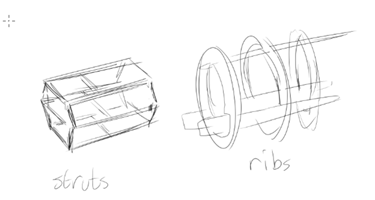

These are the rules you'll use to create airplanes. This is an involved and complex project, but you can do it!
Here's a list of the Stats that matter for airplanes as you build.
Input Stats
Stability: Used to determine how stable the aircraft is in flight. It is divided into two stats, which will be synthesized at the end to create the final Stability stat. Less or more is dependent on what you want the aircraft to do.
Output Stats
Safety Stats
Planes are built out of components. We're going to build it one part at a time in the following order.
Your plane will generally need, at minimum, a pilot, an engine, and some wings. Without wings, it's a car. Without an engine, it's a glider. Without a pilot, it's a missile.
As you build the plane, remember planes cannot have negative Drag or Mass; if you manage to make one like that, you will always at least have 1 MP and 1 Drag.
Your Era will determine some factors about your aircraft to start. Regular Flying Circus is generally WW1 Era. When you're making a real aircraft be a little strict with the eras, a Spitfire FR.XIV is technically from 1944 and a Last Hurrah aircraft but the engine is a WW2 one and the aerodynamics are mostly Coming Storm.
| Era | Years | Lift Bleed | Maximum Bomb Load | Cantilever Bonus | Cost Adjustment | Pitch Stability Mod |
|---|---|---|---|---|---|---|
| Pioneer | 1903-1914 | 30 | 1/6 Structure | +4 | −2þ | +0 |
| WW1 | 1915-1919 | 25 | 1/5 Structure | +3 | 0þ | +0 |
| Roaring 20s | 1920-1929 | 23 | 1/4 Structure | +1 | +5þ | +0 |
| Coming Storm | 1930-1938 | 22 | 1/3 Structure | 0 | +10þ | +2 |
| WW2 | 1939-1943 | 20 | 1/3 Structure | 0 | +15þ | +2 |
| Last Hurrah | 1944+ | 18 | 1/2 Structure | 0 | +20þ | +2 |
Components of the aircraft are associated with an era, when they first became widely available. For Himmilgard, this era is WWI. This is not a hard and fast rule, airplanes commonly have features ahead of their time, and when replicating a real airplane, simply use the features that it actually possessed. For custom designs, it is best for most characters to remain within the era limits with perhaps one exception. Students, with their cutting-edge designs, may have two components, or one component two eras ahead. As always, discuss with the GM and the rest of the group.
Each member of the crew, including the pilot, sits inside the frame of the aircraft.
Firstly, decide below how the cockpit is constructed by selecting one below for each crew position.
Visibility, Flight Stress and Escape modifiers apply to each crew position individually.
| Type | Description | Effects | Cost | Era |
|---|---|---|---|---|
| Open | The pilot is fully exposed to the air. | +1 Mass, +3 Drag, +2 Escape, +1 Visibility | - | Pioneer |
| Windscreen | A piece of glass in front of the pilot. | +2 Mass, +1 Drag. +2 Escape, +1 Visibility | 1þ | Pioneer |
| Sealed | There is no window or external view. | +2 Mass, −3 Escape, −1 Flight Stress. This crewmember cannot see outside. | 1þ | Pioneer |
| Narrow Canopy | A frame with small windows. | +3 Mass, −1 Visibility. −1 Flight Stress. | 3þ | WWI |
| Bubble Canopy | A cockpit made from curved glass. | +3 Mass, −3 Drag, −1 Flight Stress | 8þ | WWII |
To each cockpit, you can add the following upgrades.
| Upgrade | Description | Cost | Era |
|---|---|---|---|
| Co-Pilot Controls | Allows this seat to also control the aircraft. -2 Flight Stress for Pilots. | 1þ | Pioneer |
| Escape Hatch | +1 Mass, +3 Escape | 2þ | Pioneer |
| Ejection Seat | +2 Mass, +5 Escape | 4þ | Last Hurrah |
| Connectivity | Connects this cockpit to any other cockpit with the same upgrade. +1 Mass. | - | Pioneer |
| Oxygen Mask | The pilot ignores the effects of high altitude and negates up to 2 G-Penalty. Requires 1 Charge Continuous. | 2þ | WWI |
| Isolated |
A basket or box allowing unusual mounts (like in front of a propeller) completely ignoring the usual system. +5 Drag, +1 Mass, +2 Visibility, −2 Escape, +1 Flight Stress. Take double Injury when you Go Down. |
1þ | Pioneer |
These cockpit options can represent different ideas depending on the crew area. The Narrow Canopy represents the glass panels of the B-17's cockpit and Open the hole cut out in the wall for the waist gunner, for example.
Try not to die! You need to buy these upgrades on a per-cockpit basis.
| Type | Effects | Cost | Era |
|---|---|---|---|
| Padding | Negate 1 Injury for this position when you Go Down. | 1þ | Pioneer |
| Harness | Negate 1 Injury for this position when you Go Down, −1 Escape. | 1þ | Pioneer |
| Fast Release System | +2 to Escape. | 1þ | Coming Storm |
| Roll Bar | +2 Mass. Negate 1 Injury for this position when you Go Down. | - | WWI |
| Flare Slot | Allows flares to be fired out of a closed cockpit without opening the cockpit. | 1þ | Roaring 20s |
| Basic Fan | Requires the Electrics Vital Part. | - | Pioneer |
These can help you aim! By default, we assume a plane has little more than some simple ring sights. These gunsights can help you do better. You can only use one at a time, though.
Each gunsight you stuff in your cockpit gives −1 Visibility, so be sparing!
| Type | Effects | Cost | Era |
|---|---|---|---|
| X1 Collimated Gunsight | +1 to Attack. | 2þ | WWI |
| Telescopic Gunsight | +2 to Attack if you Draw a Bead. | 3þ | WWI |
| Illuminated Reflex Sight | +2 to Attack. Disabled when the Electrics Vital Part is hit. | 6þ | WWI |
| Gyro Gunsight | +2 to Attack, and additional +2 if you Draw a Bead. Disabled when the Electrics Vital Part is hit. | 12þ | WWII |
Bombsights help put bombs on target!
A bombsight costs 2 thaler for a basic Quality 4 model, and then +1 thaler for every 3 Quality after that.
Capacity for 5 passengers takes up 2 hull sections that cannot be used for anything else. In-flight snacks must be purchased separately. The passenger area is treated collectively as a crew position, so can be connected to the crew positions with a Connectivity upgrade.
A bed, stretcher, or first-class accommodations take up 2 passenger seats.
Every Passenger on an aircraft (a person on or in the plane who does not operate one of its functions) adds 1 Bomb Mass. As with other forms of load, we round this up to the nearest MP.
Passenger space can be used as cargo, with every passenger seat or stretcher being used to hold 1 Cargo. This is to represent the space restrictions caused by seats etc.
Engines come in two general types, Pusher engines and Tractor engines. Tractor engines have the propeller ahead of the plane pulling it, while pushers have it behind the plane pushing it away.
Your engine can be chosen from the list of premade engines appropriate to the setting, or made in the engine builder otherwise.
Generally speaking, air cooled engines are lighter but less powerful while water cooled engines are heavier but more powerful.
Engines can be mounted in a variety of ways.
A rear-mounted pusher represents an engine mounted at the far end of the aircraft's body, like the pusher engines of a Kyushu J7W. A center-mounted pusher engine represents a pusher engine that still has a tail, using an extended driveshaft or Farman tail to avoid imbalance.
The visibility will be the worst visibility of all the engine mounts. Having a pusher mount doesn't help you see around a pod-mounted engine very well.
Hull Engine Mounts
Hull engine mounts require a Frame Slot for each engine.
| Type | Description |
|---|---|
| Tractor |
Normal. Forward-firing fixed weapons will need sync gears/spinner mounts. Turrets cannot fire forward. |
| Center-Mounted Tractor |
−2 Pitch Stability, +1 Visibility. Forward-firing fixed weapons will need Sync gears. Will require an Extended Driveshaft. With the space free at the front of the aircraft, you can mount a single weapon that fires through the spinner. (Represents P-39 style engine mounts.) |
| Rear-Mounted Pusher |
−4 Pitch Stability, +2 Visibility, −2 Escape. Rearward-firing fixed weapons will need sync gears/spinner mounts. Turrets cannot fire backward. (represents engines mounted at the rear of the aircraft) |
| Center-Mounted Pusher |
−2 Pitch Stability. +2 Visibility, −2 Escape. Requires Extended Driveshaft, Farman Tail, Swept Wings w/ Rudders, or Boom Tail. Rearward-firing fixed weapons will need sync gears/spinner mounts. Turrets cannot fire backward. (represents engines mounted in the center of the aircraft a la the DH2) |
| Pod | +5 Drag and −2 Visibility. Keeps the engine out of the way of everything. |
Wing Engine Mounts
| Type | Description |
|---|---|
| Nacelle (Inside) | Reduces Max Strain by half the mass of the engine. +1 Lift Bleed. |
| Nacelle (Offset) | Adds Drag equal to the mass of the Engine. |
| Channel Tractor | −1 Lift Bleed. Reduces Max Strain equal to the mass of the engine. |
If you wanted to, you could build a plane asymmetrical, with different engine types on either side of a wing, or a single large engine on one wing. In these cases, take −3 Lateral Stability.
Engines have Torque, which is subtracted from their Lateral Stability directly if it uses any hull mounts. Wing and Pod mounts minimize the stability effect of Torque, so ignore it there.
Rotary engines are usually the only engines that you need to worry about this with in early aircraft, seeing as they are a giant chunk of metal spinning at high speeds.
Wing mounted rotary engines reduce your Strain by the Torque (use all engines), representing the force against the wing. In a push-pull configuration, you can choose to reduce Structure instead.
Fuselage Push-Pull engines can also choose to reduce Structure, in which case this negates the stability effect of Torque, and removes the rotary bonus to dogfighting.
Contrarotary engines are a special engine type that halve the Torque from the engine. They must be paired with a Geared Propeller in order to function.
A Push-Pull configuration allows two engines to be mounted along the same line. This requires the same engine model be used for both.
In any Push-Pull configuration, use only the Drag from one engine, and apply the following modifiers.
Push-Pull Designs
| Type | Description |
|---|---|
| Tractor + Pusher/Rearward | 90% Engine Power. The −2 Pitch Stability and −2 Escape from having a Pusher. Cowling costs +2 for the Pusher engine as normal. |
| Nacelle/Nacelle | 80% Engine Power. Only apply the nacelle penalty for one engine. |
| Tandem Pod | 90% Engine Power. Only apply the +5 Drag Penalty once. |
An extended driveshaft basically means that, while the engine is mounted in the middle of the plane, the propeller can still be at either end because the rod connecting the two is longer than usual and runs through the length of the plane.
Extended driveshafts add +1 Mass.
This can be done for a variety of reasons. On tractor planes, this can allow an artillery weapon to be mounted internally, firing through the propeller without the use of the sync gear by running the barrel directly through the prop hub. For example, a weapon mounted ahead of the engine in a dedicated space like the 37mm autocannon in the nose of the P-39 Airacobra.
On a central engine mount pusher plane, an extended driveshaft eliminates the need for a Farman tail. You can just mount a conventional tail around the engine without any problems. Similarly, a center-mounted tractor with canards (ie: the tail is in front of the plane) may use the extended driveshaft to avoid the Farman tail.
Outboard Propellers are when a set of belts, gears, and pulleys are used to offset the propeller (or propellers) to the side of the engine and the fuselage. This requires the extended driveshaft upgrade, and incurs a cost of +3 Drag and −2 Reliability. As a benefit, fuselage mounted guns no longer need to be synchronized, because the propellers are out of the way.
This upgrade can be applied to Tractor, Center-Mounted Tractors, and Push-Pull Engines. In the case of Push-Pull engine, it is the rear engine that drives the outboard propellers, and as such forward firing guns still need to be synchronized, but there is no −2 penalty to Escape.
This upgrade can be applied to any engine. It costs +1þ for each iteration. Available in the WWI era.
Adding this will add +50% to the engine's Overspeed, and give −1 Reliability. You can add this as many times as you want.
You can pay an additional 1þ to negate Reliability penalty from the geared prop only, 1-1. Available in the Roaring 20s era.
Note: While technically you can gear a Rotary engine (and there are a few historical examples), this is an abomination against engineering and you should think twice, or a dozen times before doing it.
Cowling can be applied to any air-cooled engine.
| Type | Description | Engine Types | Cost | Era |
|---|---|---|---|---|
| Basic Cowl | 80% Engine Drag, +1 Mass. | Air Cooled | 1þ | Pioneer |
| Rotary Basic Cowl | 40% Engine Drag. +1 Mass. | Rotary | 1þ | Pioneer |
| Closed Cowl | 30% Engine Drag. −1 Reliability, +1 Mass. | Rotary | 1þ | WWI |
| Foil Cowl | 40% Engine Drag. +3 Reliability, +2 Mass. | Air Cooled + Rotary | 3þ | Roaring 20s |
| Adjustable Slat Cowl | 50% Engine Drag. +2 Reliability, +2 Mass. | Air Cooled | 2þ | Coming Storm |
| Sealed Cowl | 50% Engine Drag. +1 Mass per 3 Engine Drag (pre reduction). | Liquid Cooled | 1þ | Pioneer |
Cowls are more difficult to apply to fuselage pusher aircraft, requiring careful engineering for airflow. Increase the costs by +2. The exception is Sealed Cowl, since well, they're sealed and there's no airflow to be engineering.
Additionally, an air cooling fan can be mounted inside the cowling of a non-rotary air-cooled engine. This can draw vast quantities of air over the engine, though it introduces an additional heavy spinning blade to the crankshaft.
A turbocharger takes up a frame slot!
You can mount an engine as a generator. It doesn't provide any power to make you go forward, but you can boost it independently of your other engines to recharge batteries or provide energy for things. You don't require an alternator (we presume that's built in) and it generates double Charge as the same engine if it were powering a propeller with an alternator.
If your engine is air-cooled, awesome! Just plop that bad boy in there and it'll go on its own. Adds the Oil Pan Vital Part.
If your engine is rotary;, you'll need to add 1 Mass for the engine's Oil Tank. This is a separate Vital Part.
If your engine is liquid-cooled;, you'll need to add a radiator and an oil cooler.
An oil cooler is simple: you add +1 drag per 15 power and it counts as a Vital Part.
A radiator weighs 3 Mass and has a variable amount of Drag, which you choose. You cannot have more radiators than you have engines, but you can opt to connect multiple engines to the same enlarged radiator. This'll save weight, but be a single point of failure. Each radiator is a Vital Part.
The Drag of a radiator is how much of the surface of the radiator is exposed to the air. Every point of Drag gives +2 Cooling. You must have a Cooling value equal to the Cooling of your engine(s) or lose reliability. Every point of cooling you have less than that gives −1 Reliability. Having more Cooling than your Engine requires will not make it more reliable.
The Type is the design of the radiator, and the Mount of the radiator is where it is in relation to the engine (not the aircraft as a whole) and it affects radiator performance after it gets shot. Both of these can give straight reliability bonuses to the engine due to mechanical simplicity or efficiency.
Radiators can have different types. If the radiator gains more Drag, it will not add more Reliability: this is from the other parts of the design like hoses or framework.
Radiator Type
| Type | Description | Era |
|---|---|---|
| Panel | Default. | Pioneer |
| Box | +2 Drag, −1 Mass. | Pioneer |
| Intake | +2 Cooling +3þ. | Roaring 20s |
| Evaporative Cooling | See Below. | Coming Storm |
Radiator Mount
| Location | Description | Era |
|---|---|---|
| Low | +1 Reliability. Force Cool Down when shot. | Pioneer |
| Inline | Default. | Pioneer |
| High | Bonus persists for 1 Cool Down after being shot. +1 Drag. If the plane is an open cockpit, will spray the pilot with the radiator fluid! | Pioneer |
| High Offset | Requires a Parasol Wing. As per High, but −1 Lateral Stability, and the pilot is safe if ruptured.. | WWI |
Radiator Examples:
Panel radiators are any radiator design that air "passes over", while Box radiators are radiators designed for air to"pass through". In simplest terms, if it sticks out all ugly like or is in the nose, it's a box, if it's flat against a surface like a wing or the skin it's a panel.
Intake radiators are specifically radiators built inside specialized housings designed to funnel air and reduce drag.
The radiator on an Albatros D.II is a High Panel radiator.
The radiator on the side of a Sopwith Dolphin or Albatros D.II early is a Low Box radiator.
The radiator on the nose of an SE5a or Fokker D.VII is an Inline Box radiator.
The radiator on a Spitfire or P-51 is a Low Intake radiator.
Special Coolant
Normally, a radiator is just full of water. If you want to be a fancy engineer, you can load your radiator with special coolant as follows. Remember to round down with cooling!
If you want to use any of the coolants marked with a *, you need to spend +2þ to harden your radiator for it.
By default, radiators are filled with water, but if you can find sources, you can fill it with other fluids to increase engine efficiency. You need to buy the liquid again if the radiator gets damaged. If the liquid is marked with a *, you need a special hardened radiator for them (2 thaler to upgrade).
| Liquid | Effects | Cost | Era |
|---|---|---|---|
| Water | - | Pioneer | |
| Salt Water* | +1 Reliability (Free for Fishers) | 1þ | Pioneer |
| Mineral Oil* | Absorbs 1 Miss per Cool Off. Flammable | 1þ | Pioneer |
| Castor Oil | As Mineral Oil, but +2 Stress if leaking | - | Pioneer |
| Glycol | +2 Reliability | 2þ | Roaring 20s |
| Freon | +4 Reliability. Take 1 Power Reduction while RPM is below 4. | 3þ | Coming Storm |
| Ammonia | As Freon, but causes 2 Injury when leaking | 2þ | Pioneer |
| Evaporative Cooling |
|---|
|
An alternate way to cool a liquid cooled engine is evaporative cooling. This requires a sufficiently large wing (at least 5 Area per engine) with some sort of metal skin. Rather than running water to a radiator, the water is sprayed as steam into a cavity in the wings to cool it, where it is collected and fed back into the engine. This is more streamlined, but is very fragile. Evaporative cooling only costs the +3 Mass you'd pay to get a radiator. There's no Drag involved, you're just ready to go. The downside is that any attack with a Crit roll of 16+ will knock out the radiator, in addition to any other damage done or other parts damaged. |
Pulsejets are simply bolted somewhere onto the plane. We don't particularly care where or in what configuration: we just know however it was done keeps it away from any working parts.
Pulsejets cost 5þ and 1 upkeep simply for having one on your aircraft. They're hard on airplanes.
Pulsejets produce Rumble. Rumble causes stress to crew members equal to half the total Rumble, or 3, whichever is lower. In addition, an aircraft requires a minimum structure of total Rumble * 10 to fly, or the vibrations shake the aircraft apart.
Jet engines are mounted in one of the following ways. Jet engines carry with them their own requirement in Frame Slots owing to their size.
| Type | Description |
|---|---|
| Front Intake/Rear Burner | Default. Can mount up to 2 engines. |
| Wing Pod | Reduces Max Strain by half the mass of the engine. +1 Lift Bleed. |
| Pod | +3 Drag and −1 Visibility. Keeps the engine out of the way of everything. |
Now that you have the sections your aircraft needs, you'll need to build them. To start, build a frame. The frame gives a basic Structure, plus some bonuses as the plane gets bigger. Choose just one, whatever the majority of the frame is built from, and add 1 piece per section.
Generally, we split airplanes into being made of Spars, or being made of Ribs. If your plane is kept together by tension wires with the frame providing compression, it's made of a Spars. If it's just a big set of solid pieces, it's made of Ribs.
A Sopwith Camel is made of Wooden Spars. A Fokker DR.1 is made of Steel Spars. The Junkers J.1/J4 is made of Aluminum Spars. The Polikarpov I-16 is made of Wooden Ribs. The P-47 is made of Steel Ribs. The P-51 is made of Aluminum Ribs.

| Frame Material | Base Effect | Cost Base | Effect per Piece | Cost per Piece | Era |
|---|---|---|---|---|---|
| Wooden Spars | 15 Structure | - | +1 Mass, +2 Structure | - | Pioneer |
| Steel Spars | 25 Structure | 1þ | +1 Mass, +5 Structure | 1þ | Pioneer |
| Aluminum Spars | 20 Structure | 2þ | +½ Mass, +4 Structure | 2þ | WWI |
| Wooden Ribs* | 30 Structure | 1þ | +2 Mass, +5 Structure | ½þ | WWI |
| Steel Ribs* | 60 Structure | 2þ | +3 Mass, +12 Structure | 2þ | Roaring 20s |
| Aluminium Ribs* | 50 Structure | 3þ | +2 Mass, +8 Structure | 3þ | Roaring 20s |
| Titanium | - | +1 Mass, +10 Structure | 8þ | Last Hurrah | |
| Living Grove* | 30 Structure, Free Repairs | 8þ | +2 Mass, +4 Structure | - | Himmilgard |
Titanium is a special case and cannot be used for whole frames.
A frame marked with * can be made Geodesic, which doubles the cost per piece, but adds +50% Structure per piece. Geodesic frame pieces cannot subsequently be Monocoque.
By default, each frame piece adds +4 drag to the aircraft, representing uncovered structure hanging out in the world. You must cover these elements to make them streamlined. For each section, choose a covering from below. The entire skin of the aircraft must be the same, so choose the dominant type.
| Skin Material | Effects | Cost | Monocoque Structure | Era |
|---|---|---|---|---|
| Naked | + 1 Visibility per Piece, up to +3. 60% Airframe Mass. | - | - | Pioneer |
| Cloth Canvas | 50% Airframe Drag | - | - | Pioneer |
| Transparent Celluloid | 60% Airframe Drag. + 1 Visibility per Piece, up to +3. Flammable. | 1þ | - | Pioneer |
| Treated Paper | 50% Airframe Drag. Flammable. 75% Airframe Mass | - | - | Pioneer |
| Tense Silk | 50% Airframe Drag. +1 Toughness per Piece | 1þ | - | Pioneer |
| Dragon Skin | 50% Airframe Drag. Plane gains 5 Coverage AP2 armour. | 4þ | - | Himmilgard |
| Molded Plywood | 40% Airframe Drag | ½þ | +3 | Pioneer |
| Clinker Build | 50% Airframe Drag. Full Monocoque, adds flat +30 Structure. | - | −3 | Pioneer |
| Glass Reinforced Plastic | 30% Airframe Drag. | 1þ | +0 | Last Hurrah |
| Corrugated Duralumin | 50% Airframe Drag, +3 Toughness per Piece | 1þ | +10 | WWI |
| Steel Sheet | 35% Airframe Drag, +3 Toughness per Piece | 1½þ | +8 | Roaring 20s |
| Aluminum Sheet | 35% Airframe Drag, +2 Toughness per Piece. 75% Airframe Mass | 2þ | +6 | Roaring 20s |
You can build a monocoque (one-shell) or semi-monocoque plane if you wish.
A monocoque or semi-monocoque plane can be built by substituting the mass and structural bonus from a piece of frame for a monocoque-compatible skin piece. The frame still exists: few monocoque aircraft are truly without a frame, these frameworks are just minimized and incorporated into the shell structure.
Monocoque skin pieces cost +1þ each, representing the labour cost of designing and building it. This is in addition to the frame cost: that doesn't go away.
A lifting body and flying wings are both incredibly complicated engineering achievements and require the aircraft to have a solid skin (Molded plywood or better).
A Lifting Body aircraft counts each Frame Section (not internal supports) as being 3m2 of wing area for the purposes of calculating stall speed, and adds +1 Drag per piece. Each piece costs +1 thaler. For a pure lifting body with no wings at all, Max Strain is equal to Structure, before subtracting engine mounts, or adjusting by optimization.
A Flying Wing is a lifting body that also avoids the extra drag in exchange for taking +5 Lift Bleed, representing the overly thick wing chord.
Both these aircraft still have tails, even if they are blended into the rest of the machine.
To increase the resilience of an aircraft, you can add Internal Bracing. This is basically extra Frame Pieces that you don't have to put Skin on, because it is on the inside. You can have 1 Internal Bracing piece per actual frame section. They do not have to be the same material as everything else: you can build a wooden aircraft with some steel bracing, for example.
Titanium can only be used for internal bracing. Making a whole plane out of Titanium is like making an entire ring out of diamonds: cool, but way too expensive to be worth it.
We consider the tail as the Sections of the aircraft which is left mostly empty. They add extra frame sections, and also change the pitch stability of the aircraft. Be very careful with your selection: a short tail seems optimal, but pitch stability offsets the effects of things like torque, short wings, and the natural roll instability of aircraft, so taking it in too much will result in aircraft that are uncontrollable.
Most of the best WW1 fighters would be Stubby, as would WW2 aircraft like the I-16, F2A Buffalo, and Me-163 rocket fighter. As a general rule, if you look at it and go "that looks like a toy", you're Stubby. It if looks reasonable, you're Standard. Most large bombers and such will use Long.
| Location | Additional Frame Sections | Plane Modifier |
|---|---|---|
| Tailless | +0 | −4 Pitch Stability, cannot use traditional tailplane or vertical stabilizer. +3 Visibility |
| Stubby | +1 | −3 Pitch Stability. |
| Standard | +2 | No change. |
| Long | +3 | +3 Pitch Stability. |
Tail sections are as a rule empty. Tail sections aren't necessarily at the "back" of an aircraft, they just bulk it out and help balance it. For example, think of the tailgun positions in bombers.
If you want to mount controls behind a pusher propeller (or ahead of a tractor!), you use a Farman Tail. This is a structure of struts built around the propeller that allows the control surfaces to hang from it.
This is built like a regular tail, above. A farman tail weighs half as much as a conventional Tail, but cannot be given a surface: it is always a naked tail.
A farman tail does not count as part of a monocoque aircraft (as that wouldn't work), so just select a type of frame material.
Boom tails are another option useful for both pusher planes and some planes with nacelles. It allows the same things as a farman tail, but is in many ways more sophisticated. It does have some aerodynamic difficulties, however.
A Boom Tail is built like a regular tail, and uses all the same rules. It subtracts the Mass of the Tail from the Strain of the wings, and a Boom Tail that isn't connected to tractor engine nacelles generates +50% Drag.
If you have wing warping and boom tails, you've made a mistake, and are hit with a −2 penalty to both Lateral and Pitch Stability. A warping wing will deflect the tailplane!
You need wings to fly, or something wing-like at least. A greater wing area means more lift on your plane, but also means more drag and less structural integrity.
To start with, your airplane's wings have a number called their Lift Bleed;, determined by your Era. This represents how much lift is lost to inefficiency in wing design. Ideally, this number would be 1.
Start by deciding how much wing area you want your plane to have overall, across all the wings. Write it down as Meters Squared.
Now, divide this area up into each wing plane your aircraft will have. Each wing added after the first gives…
Wings are not all the same shape; some wings are long and skinny (they have a high aspect ratio;) and some wings are short and wide (they have a low aspect ratio;).
Decide the wingspan of each wing on the plane, alongside the area you've given it.
Wings have a strain modifier and additional Drag.
Strain reduction = 2Span + Area - 10. Wings cannot generate positive strain, how would that even work.
Wing drag is 6 * Area^2 / Span^2. Any given wing must always generate at least 1 Drag.
Drag and inflicts a −24 Strain Penalty
Strain Penalty.
The longest wing on your aircraft will give the following modifier.
8 - Wingspan = Control Modifier
Every point of Wingspan less than 8: −1 Lateral Stability.
As this is a game about early flight, you may decide to have more than one wing. Will your plane be a monoplane, a biplane, a triplane, or something stranger?
Choose a location for each wing. Unless you are building an inline tandem wing plane, you may have at most one Shoulder wing, one Mid wing, and one Low wing. There's no limit on the number of Parasol or Gear wings you can have.
The type of wing you have is determined by where it is positioned relative to the fuselage and the centre of mass of the aircraft, which are usually but not always in the same place. Use the main portion of the wing, not where it attaches. Gull Wings may have a different attachment point than the location of the main portion.
In some cases, like on the Macchi M.5 (the one Porco Rosso flew in the war), the centre of mass might be thrown off by engine placement significantly above or below the fuselage, so you can choose to count wing placement relative to the engine instead.
Wing Decks
These apply to each full wing attached. The Largest Wing modifier applies for Monoplanes and Sesquiplanes to the wing with the largest Area.
| Location | Plane Modifier | Largest Wing Modifier |
|---|---|---|
| Parasol | +3 Pitch Stability, −10 Max Strain. −2 Lift Bleed. −1 Visibility | +1 Lateral Stability. −1 Control |
| Shoulder | +2 Pitch Stability. −1 Lift Bleed. −1 Visibility | −1 Control |
| Mid | - | −10% Drag for this wing |
| Low | −2 Pitch Stability. −1 Crash Safety. −1 Lift Bleed | +2 Control, −1 Lateral Stability |
| Gear | −3 Pitch Stability. −10 Max Strain, −1 Crash Safety. −2 Lift Bleed. | +3 Control −1 Lateral Stability |
Remember, always round down to whole numbers!
Wing Surfaces
| Skin Material | Plane Modifier | Cost/10 Area | Era |
|---|---|---|---|
| Cloth Canvas | - | - | Pioneer |
| Treated Paper | Makes the plane Flammable, −1 Mass per 4 Area, up to 25% of the dry mass of the plane. | - | Pioneer |
| Tense Silk Layers | 90% Strain Penalty | 2þ | Pioneer |
| Plywood | 90% Strain Penalty, 1 Mass/5A | 1þ | Pioneer |
| Aluminium Sheet | 80% Drag | 3þ | Roaring 20s |
| Corrugated Duralumin | 60% Strain Penalty , 1 Mass/4A | 2þ | WWI |
| Thin Sheet Steel | 60% Strain Penalty, 90% Drag, 1 Mass/5A | 3þ | Roaring 20s |
| Grand Eagle Feather | +1 Control per 5A | 6þ | Himmilgard |
| Solar Fiber | +1 Charge Gen per 5A | 4þ | Himmilgard or Last Hurrah |
| Dragon Skin | 40% Strain Penalty | 8þ | Himmilgard |
| Transparent Celluloid | Makes the plane Flammable. +1 Visibility per wing. −1 Toughness per 10 Area | 1þ | Pioneer |
If you have multiple wing decks, you may stagger the wings.
Wing Stagger
| Location | Plane Modifier |
|---|---|
| Tandem | Eliminates the need for Horizontal Stabilizers. +4 Pitch Stability. Cannot be tailless. |
| Extreme Positive | +2 Pitch Stability, −2 Lift Bleed |
| Positive | +1 Pitch Stability, −1 Lift Bleed |
| Negative | −1 Pitch Stability, −1 Lift Bleed |
| Extreme Negative | −2 Pitch Stability, −2 Lift Bleed |
Closing a pair of wings, such as by creating a box or circular structure, eliminates the vortex effect on the end of a wing, and also allows a more complete structure. On the other hand, this design will be difficult to control, due to the added weight on the extreme ends of the wings increasing the energy required to induce a roll.
Each closed wing pair costs +1 Mass, −5 Control, and +20 Max Strain. (ie: four wings count twice, not three times)
A closed monowing isn't possible: wingtip loops to reduce drag would be part of optimization. You can have a closed inline tandem wing though.
A style of Tandem Wing where multiple wings are on the same deck level. An inline set reduces the total drag from all wings on the same level to 75%, but gives +3 Lift Bleed due to shadowing.
A Wing of 2 or less square meters is a Miniature Wing. These effectively do not count as a wing: they do not add the effects of whatever wing deck they are added onto, and instead just add +1 Control and their size for lift purposes. Each Miniature Wing past the first adds +1 Lift Bleed each.
Each miniature wing must be mounted on their own deck: they can't occupy the same space as another wing. No tandem miniature wings!
If the smallest of your wings is half the size or less of your largest wing, and the wings are not tandem, you have a Sesquiplane, an eineinhalbdecker! This unusual configuration was used to try and get some of the benefits of both monoplanes and biplanes. They have their advantages, but come with structural complications.
A Sesquiplane grants
However, one of the following penalties will apply.
Wings can be built at angles to change their properties. Wingtips up (dihedral wings) improve stability, as they make the plane more likely to roll back to a neutral position. Anhedral wings do the opposite.
Inducing a dihedral angle on the wing will add Lateral Stability, while an anhedral wing will remove Lateral Stability instead. In either case, your total Lift Bleed increases by the amount of stability added or lost.
Any wing can be declared a gull wing. We consider the deck of the wing to be where the bend is, not where the root is, because this is what matters for aerodynamic purposes. You cannot have two wings from the same root in a non-Tandem configuration. Gull Wings are available in the Coming Storm era.
Any Gull Wing will generate drag as though it had +10% area, but it comes with the following benefits:
Mid, Low, and Gear wings can be turned into an Inverted Gull Wing;. This has the following effects, better for lower wings.
Swept Wings add +5 Lift Bleed and give −1 Lateral Stability. However, they allow the complete elimination of the horizontal stabilizer and give a natural mounting point for Outboard Vertical Stabilizers.
A plane takes a −1 Control penalty for the following:
There are a number of special wing types. These wing types can be combined with normal wings, but it will rarely be worth it.
Their rules will be detailed on their own pages once complete.
An aircraft must be made stable. It must have a horizontal stabilizer to keep the nose pointing flat, and a vertical stabilizer to prevent spinning and rolling. You can design a plane without these things, but it's really hard;.
Airplanes need stabilizers to fly. Full stop. If you don't have them and you haven't done something very, very clever, your plane does a wibbly sort of motion and goes into the ground.
Your Stabilizers cost Drag, representing them getting in the airstream.
The absence of a Vertical Stabilizer subtracts Lateral Stability equal to your Wing Area. The absence of a Horizontal Stabilizer subtracts from Pitch Stability equal to half your Wing Area, and also adds +5 Lift Bleed!
Tandem wing and swept wing planes don't need horizontal stabilizers: they have enough problems. To remove them, set the selection for horizontal stabilizers to "The Wings".
You must choose where you mount your stabilizers. Your options are…
Horizontal Stabilizer
Vertical Stabilizer
You may choose to mount multiple instances of a stabilizer on your aircraft. For example, two tail fins on your aircraft mounted on the ends of the tailplane. As it's best when rudders and elevators are in the airflow of an engine, you get more benefit from doing this if you have multiple engines.
Every additional stabilizer just adds +2 drag.
For every pair of Vertical Stabilizer with an Engine beyond the first, you get a +3 Control Bonus. If you have an extra stabilizer that isn't paired with an engine, you get just +1 Control.
Push-pull engines count as a single engine for these purposes.
A V-Tail combines both Pitch and Lateral Stability. It must be 1/5th the wing drag total, gives +2 to both Stability types, and costs 5þ to engineer. The V-Tail is from the Coming Storm era.
A T-Tail is a horizontal stabilizer mounted at the top of (or near the top of) the vertical stabilizer. It causes half the Drag of a conventional horizontal stabilizer, reduces Lift Bleed by 2, and adds a special rule to the aircraft. The T-Tail is from the WWII era.
Deep Stall: In the event of a spin/stall while above stall speed and under power, you are at Disadvantage to recover.
Control surfaces are how an airplane moves.
You must have some way of controlling your airplane. You need Ailerons, Elevators and a Rudder.
Ailerons control your airplane's rotation. You must have these!
Ailerons
| Type | Effects | Cost | Era |
|---|---|---|---|
| No Ailerons | −15 Control, −1 Crash Safety | −2þ | Pioneer |
| Flap Ailerons | Default | - | Pioneer |
| Wing Warping | −1 Drag. Get +1 to Dogfight! at 15 speed and below. Reduce Max Strain equal to span of longest wing. | - | Pioneer |
| Spoilerons | When you roll Dogfight!, take +1, but then reduce your speed as if your Speed Factor was doubled. | 2þ | WWII |
Wing Warping becomes Last Hurrah era when the wing is reinforced with cantilevers, and costs 2þ per cantilever. That's advanced technology!
Rudders give turn control and work together with ailerons and elevators to keep the aircraft pointing in the right direction. There are two kinds available:
| Type | Effects | Cost | Era |
|---|---|---|---|
| Flap Rudder | Default | - | Pioneer |
| Flying Rudder | −1 Lateral Stability. +3 Control. | - | Pioneer |
Elevators keep your airplane's nose pointed up at the sky and not at the ground. There are two..
| Type | Effects | Cost | Era |
|---|---|---|---|
| Flap Elevator | Default | - | Pioneer |
| Flying Elevator | −1 Pitch Stability. +2 Control. | - | Pioneer |
Flaps & Slats are special attachments which can be placed on wings, changing the lift profile of the wing. Flaps are typically actuated by a pulley system of tense cables, or by hydraulics in larger craft.
You can only apply 1 type of each of these to an aircraft.
Flaps
| Type | Effects | Cost | Era |
|---|---|---|---|
| Basic Flaps | −3 Lift Bleed, −3 Control. | 1þ per 3MP | WWI |
| Advanced Flaps | −5 Lift Bleed. | 2þ per 3MP | Coming Storm |
| Control Flaps | −5 Lift Bleed, +3 Control | 1þ per MP | WWII |
| Lift Dumpers | +2 to Crash Safety. Activate for +1 to Dogfight, then immediately induce a stall. | 1þ per MP | Last Hurrah |
Slats
| Type | Effects | Cost | Era |
|---|---|---|---|
| Fixed Slots | 5 Drag. −3 Lift Bleed | 1þ | Roaring 20s |
| Automatic Slats | −1 Lift Bleed. +3 Control | 4þ | WWII |
Drag Inducers are used to slow down an aircraft, by extending something large and draggy into the airstream. There are different ways to do this for different purposes. This could be the vane-style devices used on the Stuka or the grills from the SBD Dauntless or folding brakes used on many jet fighters.
Drag Inducers
| Type | Effects | Cost | Era |
|---|---|---|---|
| Air Brake | When deployed, immediately bleed off Speed equal to Speed Factor and gain +1 to Dogfight. | 3þ, 1 Mass | WWII |
| Dive Brake | When deployed, steep dives trade altitude for speed 1-2 instead of 1-3. | 4þ, 2 Mass | Pioneer |
| Drogue Chute | Gives +3 to Crash Safety. Can be activated as a one-use Air Brake. | 3þ | Last Hurrah |
An aircraft will need some description of supporting reinforcement to ensure the wings don't fall off. On most aircraft this involves a carefully constructed rig of struts and wires, the struts being used to keep the wings apart and the wires being used to keep the wings together. Monoplanes can use wires braced to strong points on the fuselage instead of running between the wings, but it's less efficient.
Struts generate Structure, Max Strain, and a stat called Tension. You may take as many of any of these as you want: each taken represents a mirrored pair, creating a new bay.
| Type | Effects | Cost | Era |
|---|---|---|---|
| Parallel Struts | +2 Drag, +1 Mass, +5 Structure, +5 Max Strain, +30 Tension. | 1þ | Pioneer |
| N-Strut | +2 Drag, +1 Mass, +6 Structure, +8 Max Strain, +20 Tension. | 1þ | Pioneer |
| V-Strut | +1 Drag, +1 Mass, −5 Structure, +5 Max Strain, +30 Tension. | 1þ | Pioneer |
| I-Strut | +1 Drag, +1 Mass, +20 Max Strain, +15 Tension. | 2þ | WWI |
| W-Strut | +3 Drag, +1 Mass, +35 Max Strain. | 2þ | WWI |
| Star Strut | +6 Drag, +2 Mass, +10 Structure, +30 Max Strain. | 2þ | WWI |
| Wing Truss | +4 Drag, +40 Tension. Unaffected by wing configuration. | 1þ | Pioneer |
| Single Strut | +1 Drag, +1 Mass, +10 Max Strain. | 1þ | Pioneer |
| Wire Root | +10 Tension. Cannot be a Cabane strut, nor count as your first non-Cabane strut. | - | Pioneer |
You get 1 Cabane Strut on your aircraft: it can be your only strut if you want. This is a strut that generates −2 Drag (minimum 0), but only half as much Tension. It costs the regular amount of mass and cost. You can't have a cabane wing truss or wire root.
Your first non-Cabane strut gives +5 Structure, +10 Max Strain, and +10 Tension. This tension is unaffected by your wing configuration. This represents the general benefit of having these anchor points at all: further struts give diminishing returns by comparison.
Any of these struts can be made from steel instead of wood. This doubles their cost. Steel struts or trusses (not roots) give twice as much Structure, +5 Max Strain, and half as much Tension. A steel V-strut gives 0 Structure.
Wires convert Tension into Max Strain. If you choose to add bracing wires, take +3 Drag per Strut and add Max Strain equal to Tension. Max
The configuration of your wings on Tension generation is multiplied as follows.
The default assumption is that wings are of tension-braced design, using wires and spars made of appropriate materials to stay intact. Building a "cantilever wing" makes a self-supporting structure within the wing itself, braced to a strong point on the frame.
You can add 1 Mass of Cantilever Spar per 5 Structure on the aircraft. It costs 5þ to include Cantilevers at all.
| Cantilever Material | Effects Per Mass | Cost Per Mass | Era |
|---|---|---|---|
| Birch | +10 Max Strain, +2 Toughness. | 1þ | WWI |
| Duralumin | +15 Max Strain, +3 Toughness. | 2þ | WWI |
| Steel | +20 Max Strain, +5 Toughness. | 3þ | WWI |
| Aluminium | +25 Max Strain, +3 Toughness. | 4þ | Roaring 20s |
| Whalebone | −3 Lift Bleed, +5 Max Strain. | 8þ | Himmilgard |
A Cantilever Wing is thicker than a regular wing, opening up the possibility of in-wing fuel tanks.
If you are in early eras, having Cantilevers in your wings subtracts the Cantilever Bonus from your Lift Bleed. This is because it forced designers to make wings thicker and more efficient, but they had no idea that's what they were doing.
You can add wing blades if you have no external reinforcements, and at least one steel cantilever. Wing Blades double the mass of all cantilevers, but they allow you to cut your enemy apart.
Weapons let your plane hurt things!
Weapons come with their own ammunition supply, the Ammo stat they are listed with. You can purchase more ammunition for any weapon, which always costs +1 Mass. This gives you additional ammunition equal to that which comes with the weapon by default. Ammo isn't that heavy, but the larger hoppers and more complex systems needed to feed longer belts tend to be.
If a weapon is magazine loaded or manual, you can spend +50% Cost to convert it to a belt fed weapon.
Weapons come in different Sizes;: Tiny, Light, Medium, Heavy, and Artillery.
You can always mount smaller weapons in areas with restrictions, like turrets or wings. You can mount twice as many weapons of one size smaller than a larger weapon. For example, on a turret with a Medium weapon mount, you could mount 2 Light Weapons.
Weapons of the same type which fire in the same direction form a System;. All their hits are added together to create their weapon profiles, creating a number of hits and an amount of damage done at the four range bands of Knife/Close/Long/Extreme.
The aircraft weapons listed below are mounted into aircraft as part of a 'system' of identical weapons. It doesn't matter where each weapon in the system is mounted so long as they all fire at the same place at once.
To create the range chart, add together all the Hits from the guns, then multiply it by the weapon's damage to get your damage at that range.
Weapon Hits drop off with range. Centerline and turret weapons have a dropoff of 100/75/50/25 percent, rounding down, for each range band in sequence. For wing mounted guns, use 100/90/20/10 percent instead. If you've got a mix of centerline and wing guns, calculate the two groups separately, then add them together.
You may place your weapons on the hull or the wings of the aircraft. Any number of weapons can be placed on or in the hull of the aircraft, though note that Artillery-sized weapons or turrets containing multiple smaller weapons adding up to more than a Heavy weapon must each have their own frame section.
Wing mounted weapons are restricted based on the strength of the wing's construction, as follows.
Mounting a weapon heavier than this on the wing will cost +2 Mass, representing extending support beams from the hull of the plane, in the manner of the Becker 20mm cannon on the Albatros D.II.
We can imagine these weapons being mounted atop the upper wing, out along the length of the wing, and so forth.
For airplanes with traditional tractor configurations, any placement outside of the arc of the propeller is considered a wing placement.
An Artillery weapon mounted fixed forward will interfere with an engine. You must either use nacelles, a pusher, or a centre-mount tractor engine with the appropriate modifications.
When a weapon is wing mounted and uncovered, it has +1 Drag.
Covered Weapons may be covered or uncovered.
When you add weapons to your airplane, they start as uncovered.
Uncovered weapons add the drag listed in the weapon's description to the aircraft.
You may upgrade a weapon to covered, eliminating its drag. This may involve moving the weapon to inside the hull or wings of the aircraft, or it may just involve building aerodynamic fairings over it. The cost scales with weapon size, and costs are doubled for turrets.
| Weapon Size | Cost |
|---|---|
| Tiny | Free |
| Light | 1 |
| Medium | 2 |
| Heavy | 5 |
| Artillery | Automatically covered, unless in a turret. |
Wing mounted weapons cannot be covered unless you have cantilever spar.
Weapons firing down the spinner are automatically covered.
Weapons jam. Some need to be manually reloaded. Weapons that can have a crew member operate on them to carry out these sorts of activities are called accessible;. This may involve making it so you can reach the weapon, such as a foster mount that lets you pull a gun to your cockpit, or it may involve hydraulic systems to charge guns and clear jams.
Weapon systems are accessible or inaccessible as a group. You never have a situation where one weapon can be operated but the other can't.
A single weapon mount placed on the hull can be made freely accessible per crew station. Which particular weapon is accessible from which crew station must be decided when you place the weapons. Even when covered, it wasn't uncommon for the backs of these weapons to protrude into the cockpit area, or for a simple mechanical plunger to be used to clear jams.
Any weapons placed on the wings and additional weapon mounts placed on the hull start as inaccessible.
Covered weapons mounted in a turret (see below) start as accessible if uncovered weapons in the same mount would be accessible.
It costs þ equal to half the weapons in a group to make them all accessible, minimum 1.
We divide the arcs of fire of a weapon into the following directions.
Fixed weapons fire in only one of these directions because they are bolted directly to the aircraft's frame. This direction will probably be Forward, unless you are doing something very clever.
Flexible weapons can be changed to fire in more than one direction, having different settings for which direction they face without being moved and fired at the same time. Flexible weapons cost 1þ and that gives you two directions the weapon can be pointed. They can be operated by the pilot.
Turret weapons are any weapon which is flexibly mounted to a spot. They require a dedicated operator to aim. This costs 1þ to set up, and encompasses an entire system aimed by the gunner. Pick more than two directions for the weapon to fire. Expanding a turret's firing arc costs 1þ for 2 additional directions, then 1þ each.
A Turret initially has the capacity for a single Light weapon (or two Tiny weapons). They can be upgraded to a Medium weapon for 1þ, a Heavy weapon slot for 1 Mass and 3þ, and an Artillery weapon for 2 Mass and 5þ. As usual, you can mount two of any weapon one size smaller than the capacity in the turret.
Finally, you can install Weapon Braces inside a cockpit. These are basically clips or mounts a weapon can be attached to fire in any direction. 3 directions worth of Bracing costs 1þ. These mounts will allow an observer a +1 to fire a loose weapon they are carrying in their hands. The downside is that this is often very dangerous, and will prompt frequent Wingwalking moves.
If you wish to fire through the arc of a propeller (ahead of you with a tractor plane or behind you with a pusher plane), you'll need to make provisions to avoid hitting the propeller blades. This is done with Synchronization. To represent the different qualities of Synchronization options, we use the following options.
A Sync/Interrupter Gear can only be mounted on a weapon that allows it to be synchronized, and will only work if the weapon is also Fixed.
If you are cheap, you can substitute for this with Deflector Plates;. These cost 1þ and will work, but it inflicts 1 Wear on your engine every time you roll a natural 5 or less on the first Crit die!
If you have a Geared Propeller, you can mount a weapon so it shoots through the propeller spinner. This represents things like the centreline 37mm on the SPAD S.XII, the BF 109's cannon, or the P-39.
Spinner weapons bypass the need for synchronizers. They cannot be turrets.
If you have an Artillery weapon and/or a rotary engine, it must be center mounted with an extended driveshaft, in order to make room for the gun at the nose of the plane.
Here's some real-world examples of weapons on aircraft to compare.
The twin MG-08s on the Albatros D.III is expressed in Flying Circus as…
The crude Lewis gun mount on a Nieuport 11 is…
While these guns could usually be tipped back to be cleared or reloaded, this often involved standing up in the cockpit, giving an excellent opportunity for narrative complications.
The refined Foster Mount of the SE.5 is…
Wing mounted guns on a Sopwith Dolphin are…
An early FE.2 has…
Which allow the observer to fire in any direction.
The engine-mounted cannon of the BF-109 is…
The weapon has been made accessible through hydraulics.
The Load is everything that goes atop the aircraft after it is complete. This is where the difference between the Dry Mass (the aircraft as it is) and the Wet Mass (the aircraft with fuel and bombs) comes from.
Wet Mass is essentially separate mass, and it is always rounded up to the nearest MP, unlike with usual calculations. So if you have a plane that comes in at 41 Dry Mass (8MP), you can't put 3 fuel into it and stay at 8MP. Fuel only comes in 1MP chunks in the regular tanks. 1 Mass of bombs or 5 all counts as 1 MP, so if you can, always take an even MP of bombs.
This is for the sake of simplifying book-keeping at the table, and ensuring that fuel always has a penalty associated with it.
Engines have Fuel Consumption, which uses an abstracted unit of fuel. Each Mass of fuel is 25 of those points. So basically, multiply the amount of fuel mass by 25, then divided by the consumption of all your engines, and that's how many fuel uses you have.
You can fit 2 Fuel Tanks into 1 aircraft section, or add Fuel Tanks onto a wing for +3 Drag each. If you have a Cantilever wing, you can put 1 Fuel Tank per 10 Area into the wings with no additional drag instead.
A fuel tank gives you up to 5 mass of Fuel. The tank itself weighs 1 Mass.
A Micro-Tank is a 1 Mass tank that holds 25 fuel units and does not use a frame slot, but still weighs 1 Mass while empty, and is limited to 4 per airplane.
Want not to die? These will help.
Aircraft can, if set up for it, carry bombs. Exactly how that ends up getting filled out is up to you and your loadout at the time. Aircraft are limited by era as to how many bombs they can carry.
An External Bomb Mount that can carry up to 5 Mass of bombs costs 1 Mass and 1 Drag and does not take up a frame slot.
An Internal Bomb Bay takes up a frame slot, and allows up to 10 Mass of bombs to be carried internally. The largest bomb you can carry inside your plane is equal to a quarter the total internal bomb load.
You can expand the maximum bomb size of a bay by adding frame sections to lengthen the bomb bay. Adding +1 Frame per Bay lets you carry a bomb up to half the total load, another +1 Frame allows you to carry a single bomb equal to the total load inside the aircraft. Expanding the bay doubles the mass of bombs that may be carried within.
Bomb masses are always rounded up to the closest Mass Penalty; 1 Mass of bombs is still treated as 1 Mass Penalty.
When using external bomb racks, bombs will additionally reduce the speed of the plane. Recalculate the speed of the aircraft with bombs causing Drag equal to unrounded Mass, and write your top speed in as Top Speed With Bombs/Top Speed.
Bombs do not count towards your loaded MP for the purposes of landing gear and such.
Maximum Bomb Load varies by era. Internal bombs count at 1/3rd the rate of external bombs. For example, a 100 Structure WWI bomber could carry 20 bombs externally, or 60 internally, or a mix such as 30 internally and 10 externally.
| Era | Pioneer | WW1 | Roaring 20s | Coming Storm | WW2 | Last Hurrah |
|---|---|---|---|---|---|---|
| Maximum Bomb Load | 1/6 Structure | 1/5 Structure | 1/4 Structure | 1/3 Structure | 1/3 Structure | 1/2 Structure |
Rockets work just like bombs.
Cargo is treated exactly like any other load and rounded up to the nearest 5 Mass. Because most things don't actually have a mass value, improvise. Roughly speaking, 25 kilograms is 1 Mass.
Cargo space is only roughly estimated because of difficulty predicting density of the cargo and how well it stacks, so we just have a few different sizes of cargo spaces.
Each added frame section adds +3 Loaded Mass to the aircraft when you stick stuff in it. If you've barely filled it and have a lot of space to spare, though, just ignore that.
Cargo space can be used to store people, uncomfortably and temporarily. Except tiny spaces.
Starting in the WW2 Era, you can mount Hardpoints on aircraft. Hardpoints are flexible mounts that can mount a variety of different payloads, such as drop tanks, bombs, rockets, gun pods, or rockets.
Adding a hardpoint costs 5þ, and you can have one for every 20 Structure.
We'll write these rules shortly.
Underside Gears (Pick 1)
Extras
Landing gear (except skids) can be made retractable, trading all the Drag for half that value in Mass, and the other half as Cost (Round down as usual). For a Boat Hull, instead add retractable landing gear at their full cost to allow landing on both water and land.
This added mass won't make the landing gear bigger, don't worry.
If you use a boat hull, you need to keep your engine(s) clear of the water. The engines must be in a pod, above a shoulder wing in nacelles or a channel, or mounted to another wing.
Basically, a Boat Hull treats the entire hull of the aircraft as the landing gears, so what would be a shoulder wing would be a gear wing.
Armour is really simple. It comes in Coverage and Thickness values. The mass of armour is Coverage times 2^(Thickness-1). That is, for Thickness 3, it is Coverage * 4, and Thickness 5 is Coverage * 16. The cost is 1/3rd the Coverage * Thickness.
In addition, multiply the Coverage and Thickness value together, and add that much Toughness to the aircraft.
The maximum amount of armour you can have is 8 coverage. Additionally, every 2 Vital Parts you have over 8 (ie: at 10, 12, 14, etc) reduces your effective coverage by 1, so you have to buy up the difference. This represents the difficulty of armouring increasingly large planes with more important components to protect.
The armour save you get is 11 minus Coverage, so the max save is 3+. Armour coverage of higher Thickness counts for coverage in lower Thicknesses, but the cap is still 8/3+.
A plate behind a pilot to protect them from rifle rounds is 2 Coverage of Thickness 2 Armour.
Everything that generates electricity essentially generates that much electricity as a baseline, meaning that as long as the thing you are using doesn't pull more charges than that, it is "free". If it does pull more charges than that, it has to pull them from a battery.
Batteries charge up when you Cool Down if you have a windmill, alternator, or generator.
| Name | Effects | Cost | Era |
|---|---|---|---|
| Windmill | +1 Drag, +1 Charges per 10 Speed. | 1þ | Pioneer |
| Battery | +1 Mass, Stores 5 Charges. | 2þ | Pioneer |
| High Quality Battery | Stores 5 Charges. | 4þ | Roaring 20s |
| Alternator | +1 Mass, +1 Charge, and an additional +1 Charges per 10 Power of the engine it is applied to. | 2þ | Pioneer |
Electricity can power weapons and engines. They can also run the following communication systems. Intercoms, searchlights, navigation lights, radio receivers, and fans never use charges, but require an electrical system.
| Name | Effects | Cost | Era |
|---|---|---|---|
| Intercom System | Requires the Electrics Vital Part. | 1þ | Pioneer |
| Radio Receiver | +2 Mass, +2 Drag, Requires the Electrics Vital Part. | 3þ | Pioneer |
| Radio Transmitter | +3 Mass, +3 Drag, −1 Charge. | 3þ | WWI |
| Radio Transceiver | +5 Mass, +3 Drag, −1 Charge | 3þ | WWI |
| High Quality Radio Receiver | +1 Mass, +2 Drag, Requires the Electrics Vital Part. | 6þ | Roaring 20s |
| High Quality Radio Transmitter | +2 Mass, +3 Drag, −1 Charge. | 6þ | Roaring 20s |
| High Quality Radio Transceiver | +3 Mass, +3 Drag, −1 Charge | 6þ | Roaring 20s |
| Whalebone Receiver | Requires the Electrics Vital Part. Can only talk to the paired Whalebone Base Station. | 5þ | Himmilgard |
| Whalebone Base Station | +6 Mass, +1 Drag, −1 Charge. | 12þ | Himmilgard |
| High Quality Whalebone Base Station | +5 Mass, +1 Drag, −1 Charge. | 24þ | Himmilgard |
Here's some ways to gather data.
| Name | Effects | Cost |
|---|---|---|
| Integrated Recon Camera | Can take pictures downward. Capabilities scale with era. | 2þ |
| Guncam | Confirms your kills for you. | 1þ |
See farther, better.
| Name | Effects | Cost |
|---|---|---|
| Wing Cutouts | +1 Visibility, +1 Lift Bleed. Cannot be used with capped transparent celluloid wings. | - |
| Hull Cutouts | +1 Visibility, −5 Structure. Cannot be used with capped transparent celluloid frames. | - |
| Searchlight | Pick out targets at night. Requires the Electrics Vital Part. | 1þ |
If you're building a high-altitude flier or a seaplane for cold waters, you're gonna need heat. If you're flying in the tropics or desert, it's important to keep cool. These can mitigate Stress effects from adverse climate.
| Name | Effects | Cost |
|---|---|---|
| Electric Heating | −1 Charge. | 1þ |
| Radiator Loop | Requires a Radiator. | 1þ |
| Basic Fan | (Moved to Cockpit section) | - |
| Air Conditioning | −2 Charges | 4þ |
Autopilots began being used within a decade of the airplane's invention, and some available in Flying Circus are rather fantastical.
These will make your life easier.
| Name | Effects | Cost | Era |
|---|---|---|---|
| Gyroscopic | Gives +4 to Empty Seat rolls. | 3þ | WWI |
| Altitude Holding | +1 Mass, Allows the Empty Seat rule to be ignored. | 5þ | Coming Storm |
| Clockwork Programmable | +1 Mass. Can be given a single simple order such as climb, dive, turn, fly to location. Cannot Dogfight, fire weapons, drop bombs, or land. | 6þ | Himmilgard |
| Programmable | +1 Mass, −2 Charges. Can be given a single simple order such as climb, dive, turn, fly to location. Cannot Dogfight, fire weapons, drop bombs, or land. | 6þ | WWII |
| Rattenhirn | +3 Mass, −3 Charges, Does the flying for you, being fully automated. Players don't usually use these, they're for robo-planes. | 25þ | Himmilgard or Last Hurrah |
Normally you control your plane by pulling directly on wires. This lets you do it better. Pick one. See Pilot Fatigue for the full rules.
| Name | Effects | Cost | Era |
|---|---|---|---|
| Control Rods | +1 Mass. Maximum Flight Stress from MP is 1. | 2þ | WWI |
| Hydraulic Assisted | +3 Mass, Eliminates Flight Stress from MP. | 5þ | WWII |
| Fly by Wire | +3 Mass. Eliminates all Flight Stress. | 10þ | Last Hurrah |
When you mount your propeller, it gains a Pitch. Note this down for later calculations. If you use pulsejets, then you get numbers anyway, despite not having a propeller.
| Propeller Mod | Pitch Speed Mod | Pitch Boost Mod | Energy | Turn |
|---|---|---|---|---|
| High Power | .8 | 0.9 | 1.5 | 8 |
| Power | .9 | 0.8 | 2 | 7 |
| Default Pitch | 1 | 0.6 | 3 | 6 |
| Speed | 1.1 | 0.4 | 4 | 5 |
| High Speed | 1.2 | 0.3 | 4.5 | 4 |
| Pulsejet | 1.3 | 0.6 | 5 | 2.5 |
Each of these pitch values represents a unique propeller, with each propeller having a cost of 1þ. Your first propeller per engine is always free, and can be built any way you choose.
You can upgrade your propeller (except Pulsejets, they don't have actual propellers) to one of the following instead.
| Name | Effects | Cost Per Propeller | Era |
|---|---|---|---|
| Manually Variable | Allows blade pitch to be adjusted on the ground without replacing it. | 2þ | Pioneer |
| Automatic Variable | +1 Mass. +0.1 Pitch Speed, +0.1 Pitch Boost, +0.5 Energy, +1 Turn. | 8þ | Roaring 20s |
Optimizations are easy to abuse. They should only be used to represent specific design decisions that are not reflected in the stats of an airplane, or to make a real airplane hew closer to its actual stats. For example, the V-173 Flying Pancake is designed to trade increased drag for reduced lift bleed.
Optimizations happen after everything else. As an example, mass optimizations will not increase or decrease the drag from external landing gear.
Percent modifiers use the original unmodified number: they don't compound. Remember to round down.
Balance the chart.
Use your common sense here: more expensive is worse, more toughness or max strain is better!
| Negative | Effect; | Positive | ||||
|---|---|---|---|---|---|---|
| ◻ | ◻ | ◻ | Expense: +/- 10% Cost | ◻ | ◻ | ◻ |
| ◻ | ◻ | ◻ | Lift Efficiency: +/- 3 Lift Bleed | ◻ | ◻ | ◻ |
| ◻ | ◻ | ◻ | Leg Room: +/- 1 Escape, Visibility | ◻ | ◻ | ◻ |
| ◻ | ◻ | ◻ | Mass: +/- 10% Mass (not including bomb mass) | ◻ | ◻ | ◻ |
| ◻ | ◻ | ◻ | Redundancy: +/- 25% Toughness | ◻ | ◻ | ◻ |
| ◻ | ◻ | ◻ | Support: +/- 15% Max Strain | ◻ | ◻ | ◻ |
| ◻ | ◻ | ◻ | Reliability: +/- 2 Reliability | ◻ | ◻ | ◻ |
| ◻ | ◻ | ◻ | Streamlining: +/- 10% Drag (not including fuel or bombs) | ◻ | ◻ | ◻ |
Calculation Procedure
Calculate each of these stats for Full Fuel with Bombs (also cargo, passengers, ect), Full Fuel, and Empty Fuel. The Half Fuel versions of these are the average of the Full and Empty numbers, rounded down.
Mass
Add all your points of mass together. Your Mass Penalty (MP) is 1/5th of that (rounding down), minimum 1.
Do not include the mass of your Fuel or Bombs (this will be your Dry Weight). WetMP does include the mass of your Fuel and Bombs. Keep your MP low so you can climb more easily and maneuver.
Drag
Add your Mass Penalty (MP) directly to your Drag. Then add all your Drag points together. Your Drag Penalty (DP) is 1/5th of that (rounding down), minimum 1.
Keep your DP low to travel more quickly.
Power, Boost, & Dropoff
Your plane's Max Speed is determined by this equation comparing your total engine power to your drag penalty.
Max Speed = Pitch Speed * √((2000 * Power) / (DP * 9)))
Round down, as usual.
You can also use to calculate the value.
Your Boost is the Power of your engine(s) divided by your MP, rounded down. If you get 0, you need more power to overcome resting friction, so get bigger engines or lose some weight.
Your Dropoff is your final Max Speed multiplied by your Pitch Boost Mod.
Rate of Climb
The rate of climb is (23 * Power) / (WetMP * Pitch Speed * DP), minimum 1.
Stall Speed
To get your stall speed, multiply Lift Bleed by Mass Penalty, and divide by Wing Area.
Stability
Just add your two Stabilities together to get your value. However, if both your Stabilities are positive, add an additional +2 Stability, and do the opposite if they are both negative. Planes need to be a little unstable to fly, but too unstable and they don't really fly.
Your Stability creates a Control modifier as follows.
| Stability | −10 | −7 to −9 | −4 to −6 | −1 to -3 | 0 | +1 to +3 | +4 to +6 | +7 to +9 | +10 |
|---|---|---|---|---|---|---|---|---|---|
| Control Mod | +4 | +3 | +2 | +1 | 0 | −1 | −2 | −3 | −4 |
A plane with more than 10 or less than −10 stability is unflyable by human beings.
Handling
Handling = 100 + Control - Mass Penalty
Energy Loss vs Turn Bleed
These two stats are how much speed you lose when you pull up, and how much speed you lose in a combat turn. It is affected by your Energy and Turn stats from your propeller pitch. Pulsejets are in the same table despite not actually using propellers.
Your Turn Bleed is
Stall Speed (Half Fuel, No Bombs) Divided by Prop Pitch Turn.
For balance reasons, round up, minimum 1.
Your Turn Bleed will be +1 while carrying bombs, rockets, cargo, or passengers.
Your Energy Loss is
Drag Penalty (No Bombs) Divided by Prop Pitch Energy
For balance reasons, round up, minimum 1, maximum 10.
Pilot Fatigue
The default Stress per flight is 1. You gain +1 Stress for each of the factors which is true.
Co-pilots can reduce stress from everything except Rumble and rotary engines.
If you have Control Rods, the maximum Flight Stress from Mass Penalty is 1.
If you have Hydraulically-assisted controls, you do not take Flight Stress from aircraft Mass.
Fly by Wire controls eliminates all Flight Stress except from rotary engines spraying oil in your face. Just don't fall asleep in your boring-mobile.
Upkeep
This stat is Engine Power divided by 10, or the total cost of all the engines, whichever is lower. For this purpose, generators count as engines, and use the pre-reduction power (ie: Push-Pull engines).
Max Strain, and Toughness
Your total Structure is just your Structure. No modifications are needed.
Subtract your MP from your Max Strain at the end. Your Max Strain is always capped to your total Structure.
Your Toughness is Structure/5 + Armour.
Vital Parts
Determine Vital Parts list as follows.
All aircraft have the Controls Vital Part.
All aircraft have a vital part for their landing gear, whatever it is.
Each Weapon System on the aircraft is a Vital Part.
If the aircraft has any electrical systems at all, they all form one Vital Part called Electrics.
If the aircraft has any fuel tanks at all, they collectively form one Vital Part.
| Double Plane |
|---|
|
A cheap and easy way to make a heavy fighter is to glue two light fighters together. Just add all their stats together and recalculate. You can opt to remove the other cockpit to save 1 mass, but otherwise they both function. The resulting plane can then be modified on their own. Technically, you could make a triple plane or more this way as well! But then it starts to get a little silly. |
As much as this system tries to be completely comprehensive, it can't always be. Sometimes you want to go beyond the bounds of the system, or you think your character can do something clever. That's where Home Engineering comes in.
Go to your GM and say "I have an idea for something I want to do to my plane." Lay out the mechanics for how you envision this.
If this modification does not totally break the system, the GM will then charge you a fair price for it in Thaler, drag, mass, etc. They should always err on the cheaper side.
The modification has the effect you want, but there is a price. The GM gets to add a new Hard Move they can use against you, as follows.
Their special modification fails in a spectacular and horrific way.
They never have to use it. It might never come up. But it's there.
Looming.
Most planes that players buy or salvage are Used. Used planes cost half of the sticker price in thaler (rounding down), but have one of the following drawbacks. After you buy it, roll 1d10 to find out what's wrong with it! If a rule gives you multiple used penalties, they cannot be the same.
| d10 | Name | Penalty |
|---|---|---|
| 1 | Wreck | Roll again, twice! If you get this again, ignore it. |
| 2 | Burnt Out | Engines are at −1 Reliability |
| 3 | Ragged | Reduce your Max Speed by 10% |
| 4 | Hefty | Increase your Stall Speed by 20% |
| 5 | Sticky Guns | Increase the chance of guns jamming by 1 |
| 6 | Weak | Cut the plane's Toughness in half |
| 7 | Fragile | Reduce Max Strain by 20% |
| 8 | Leaky | Reduce Fuel by 20% |
| 9 | Sluggish | Reduce your Handling by 5 |
| 10 | Mint | No penalty |
It costs 5 thaler to restore a Used plane and remove the drawback, and you need to fly at least one mission before it can be fixed. Every subsequent flight reduces the cost by 1: you work it out for free after six flights.
Most campaigns won't really interact with the altitude rules in great detail, so the rule book recommends ignoring it if it isn't critical. If you are using the altitude rules, this section shows the effects on your plane. As you move into higher altitudes, the air gets thinner. Drag, lift, and control authority are reduced, and engines struggle to get enough oxygen. The rules for calculating this is on page 56 of the core rule book.
Your Altitude Factor (AF) is like Speed Factor; the 10s place on your gauge. Your aircraft's performance changes with Altitude Factor. Stall Speed increases with altitude, and your engine only operates at peak performance inside your Ideal Altitude Range (IAR).